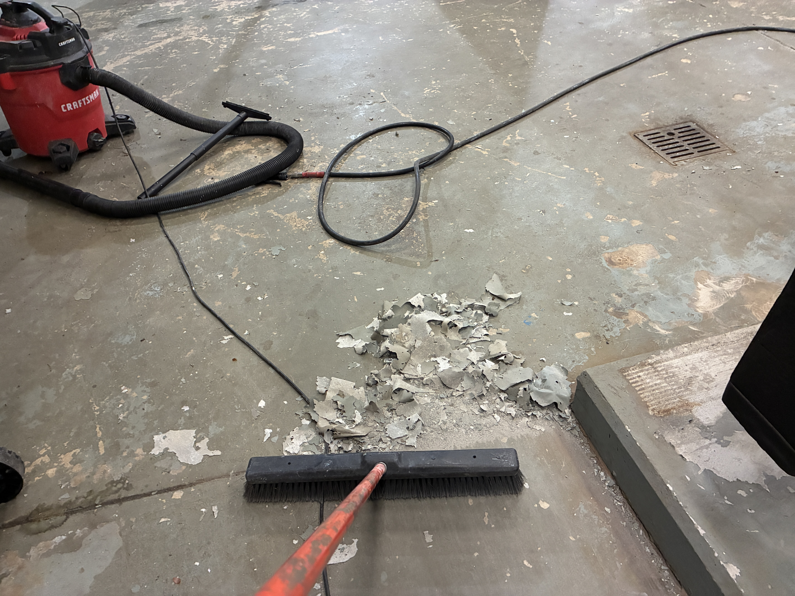

Failure Analysis • Industrial Floor Coatings
Westfield Control Room Floor Repaint
From across the room the floor looked worn. During preparation, the more important problem revealed itself: areas of the existing coating released from the concrete in sheets, exposing an adhesion failure that had begun years before this repaint.
Failure Analysis #001
At first glance, this industrial control and mechanical room floor looked like a straightforward repaint. The finish was worn, traffic had taken its toll, and the existing coating had lost the clean, uniform appearance expected in a maintained mechanical environment.
But repainting an industrial floor should not begin with the color or the finish coat. It should begin with the existing bond. As preparation started, sections of the old coating could be scraped and peeled away far more easily than a properly bonded film should release. In places, the coating came off in large strips and flakes.
The coating did not appear to be failing because the finish coat had simply worn out. The failure was occurring at or near the original bond line. The surface beneath the coating had not provided a dependable foundation for everything installed above it.
The first coat is where I look first
One principle has repeated itself across decades of commercial and industrial painting work: when a coating system fails, the final coat is rarely the first place I investigate. I want to know what happened at the substrate and what the very first coat was asked to bond to.
On concrete, residual dust, laitance, contamination, moisture, or insufficient surface preparation can create a weak boundary layer. A coating applied over that weak layer may initially look perfectly acceptable. The problem is already present, however, because every coat that follows is relying on a bond that was never as strong as the concrete beneath it.
Why this changed the repaint strategy
Once widespread weak adhesion becomes visible, simply coating over the existing floor is not a responsible repair strategy. A new coating can only perform as well as the material it is attached to. If that material is already separating from the concrete, adding another coat only adds another layer to the same failure.
The preparation therefore became an investigation as much as a cleaning process. Loose and poorly bonded material was removed. Edges were worked back to sound coating. Dust and debris were vacuumed and cleaned away. Equipment bases, curbs, stairs, drains, transitions and narrow access areas were addressed individually rather than treated as one open floor.
Industrial rooms make preparation harder
Mechanical rooms are rarely empty rectangles. This project required working around pumps, piping, equipment pads, valves, electrical controls, drains, steps and restricted access lanes. Those details matter because coating failures commonly begin at edges, penetrations and areas where preparation becomes inconvenient.
The goal was not to make the room merely look freshly painted. The goal was to leave the new coating attached to a surface capable of supporting it.
The result
After the failed material was removed and the floor was properly prepared, the room received a uniform gray floor finish that restored a clean, maintained appearance around the mechanical equipment and service areas.
The visible transformation is important, but the more important work happened before the finish became visible: determining what was loose, removing what could not be trusted, cleaning the substrate and rebuilding the coating system from a sound surface.
Westfield project photography
These are the original field photographs from the completed control room floor project.
{kind=link}
{kind=link}
{kind=link}
{kind=link}
{kind=link}
{kind=link}
{kind=link}
{kind=link}
{kind=link}
Tap any image to open the full-resolution project photograph.
Lessons from this project
The larger principle
This project is one example of a rule that applies far beyond concrete floors. Whether I am looking at steel, wood, masonry, drywall or an industrial ceiling, I want to understand the condition of the substrate and the first coating layer before deciding what the next coat should be.
Cutting corners at the beginning can create years—or decades—of scraping, repairing and repainting later. That is why, generally speaking, the first coat should be treated as the most important coat in the entire system.
Related records
Flat Black Open-Deck Ceiling Systems • Five39 Church field record • View project photography